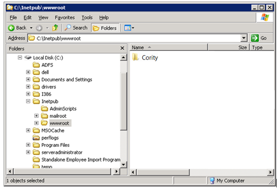
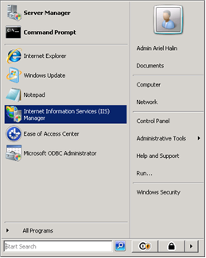
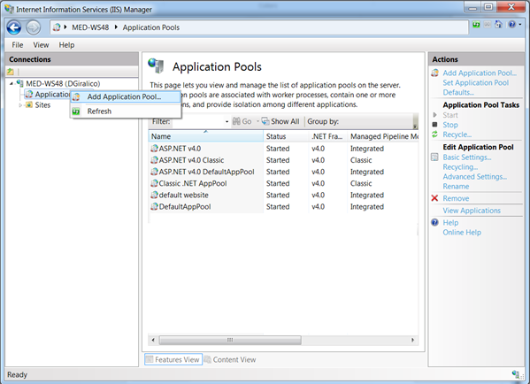
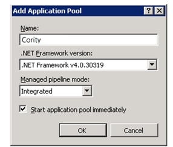
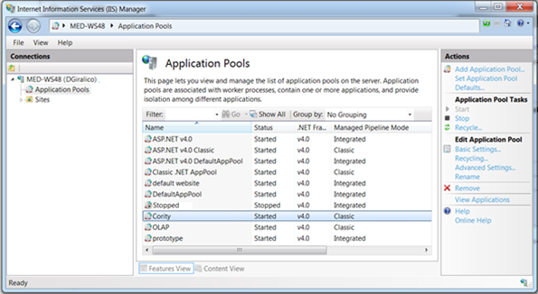
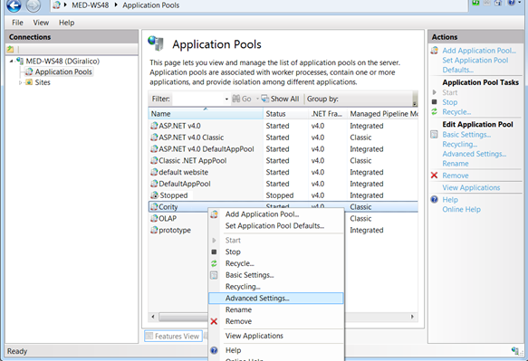
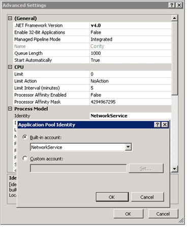
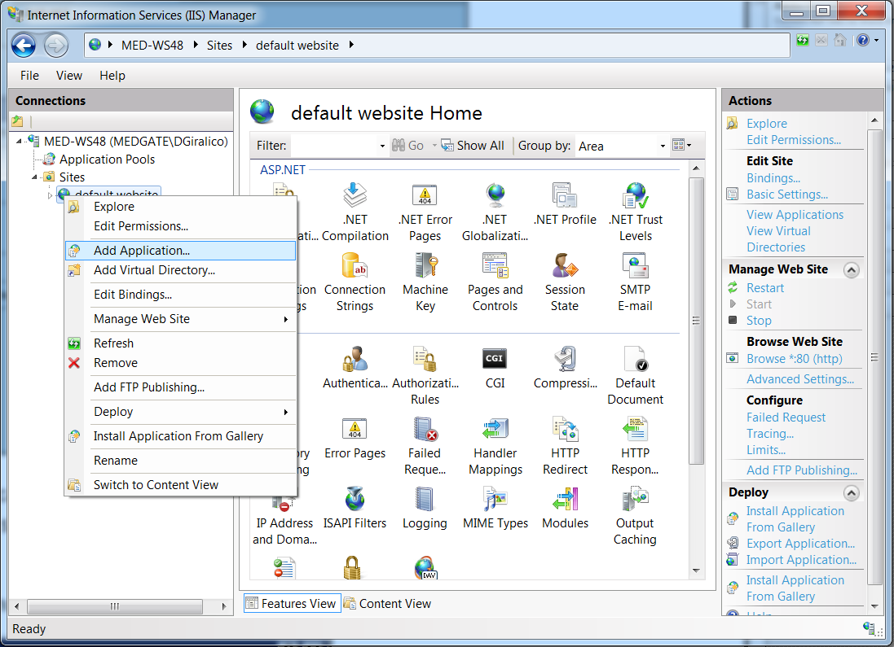

Copy the Cority folder, located in the installation package (under \Web folder), to the X:\inetpub\wwwroot\ folder.

Start IIS Manager.

In IIS Manager, create a new application pool.

Specify a name for the pool such as “Cority”, and ensure that the .NET Framework version is 4.0.30319 and managed pipeline mode is set to “Integrated”.
When you are finished, click OK.

The new pool will appear in the list of pools.

Configure the new pool’s identity by right-clicking it and choosing “Advanced Settings…”.

Choose the appropriate account for the pool’s identity (for example “NetworkService”).
NetworkService - A built-in Windows identity that does not require a password, has user privileges only, and is relatively low-privileged.
ApplicationPoolIdentity - A virtual account with the name of the new application pool.
Either NetworkService or ApplicationPoolIdentity should provide sufficient privileges to the pool for running Cority properly, however if you encounter problems accessing network resources, configure Cority to be run as a true domain user.

Create a new application for Cority.

Choose an alias for the application (“cority” is suggested), select the application pool created in the previous step and the path where the files were copied, and then click OK.